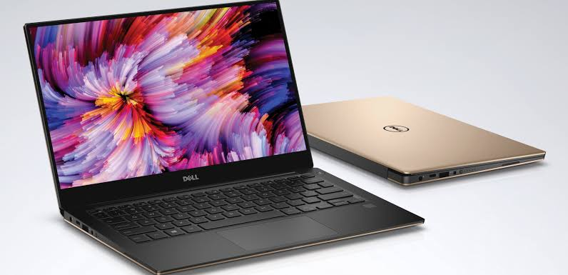
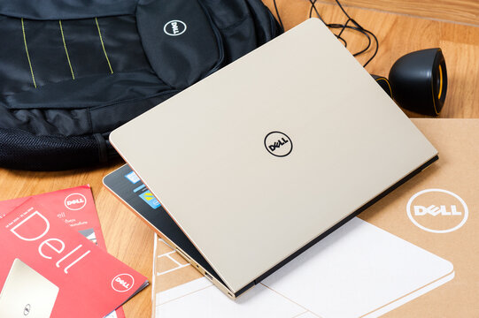
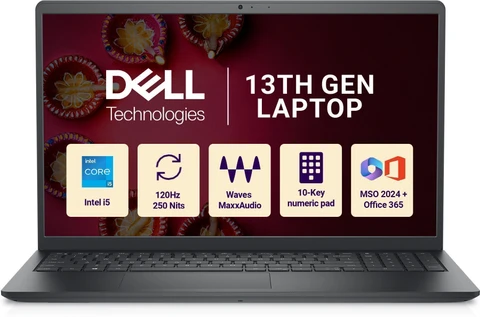

A laptop is a portable computer that allows users to perform various tasks without being connected to a desktop setup. It combines a display, keyboard, touchpad, battery, processor, memory, and storage into a single compact device. Laptops are commonly used for education, office work, programming, browsing the internet, entertainment, communication, and many other activities.
Features of a Laptop

Processor
The processor is the main component responsible for executing instructions and performing calculations. A powerful processor helps the laptop handle applications and multitasking efficiently.
RAM
RAM provides temporary memory for running programs and applications. More RAM generally allows users to work with multiple applications more smoothly.
Storage
Laptops use storage devices such as SSDs or HDDs to store the operating system, applications, documents, photos, videos, and other files.
Display
The display allows users to view applications, documents, images, and videos. Laptop displays are available in different sizes and resolutions.
Battery
The built-in battery allows a laptop to operate without being connected directly to a power outlet, making it convenient for portable use.
Keyboard and Touchpad
The keyboard is used for typing and entering commands, while the touchpad allows users to control the pointer and interact with the computer.
Connectivity
Laptops can connect to the internet and other devices using technologies such as Wi-Fi, Bluetooth, USB, and HDMI, depending on the model.
Camera and Microphone
Most modern laptops include a built-in camera and microphone for video calls, online classes, meetings, and communication.
Operating System
The operating system manages the laptop's hardware and software. Common laptop operating systems include Windows, macOS, and Linux.
Portability
One of the biggest advantages of a laptop is portability. Users can easily carry it between different locations and use it for work or study.